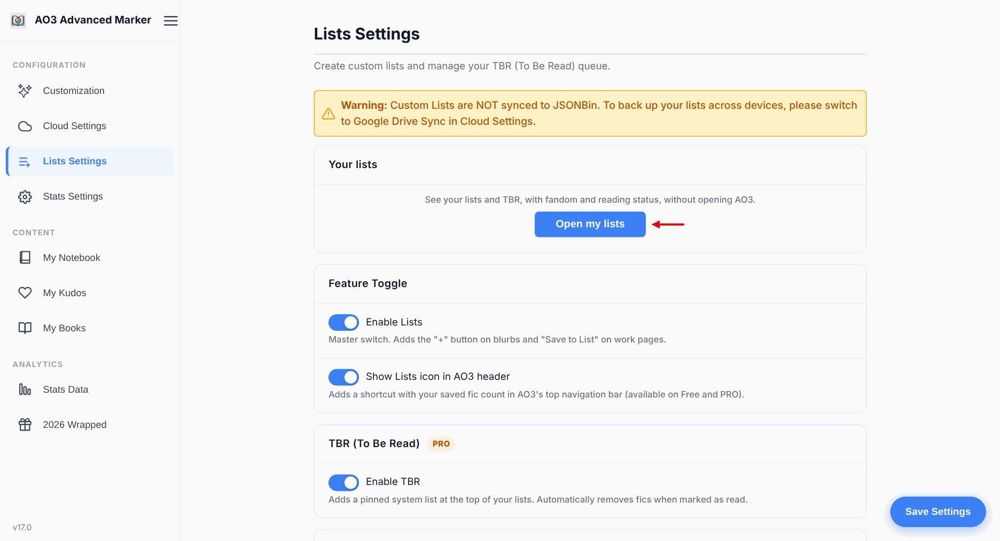
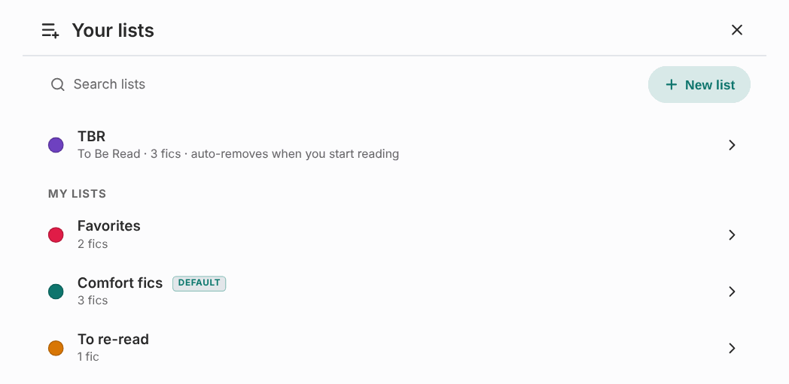
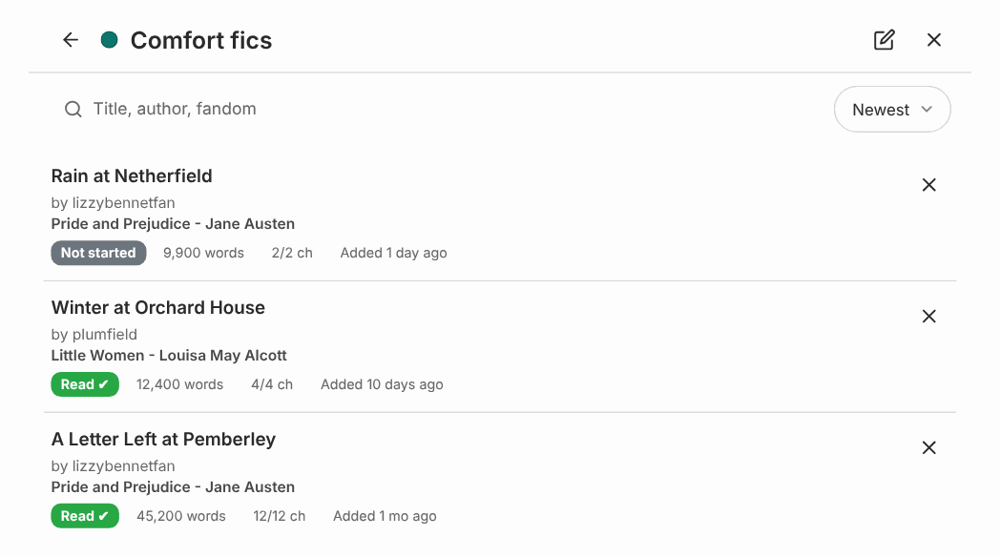
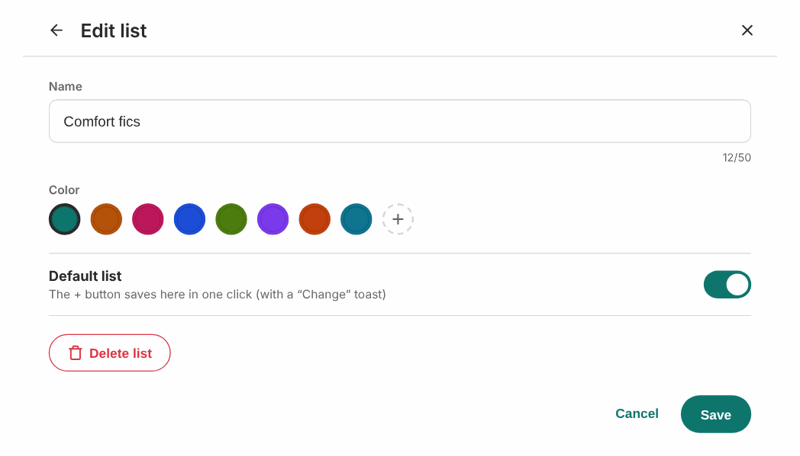
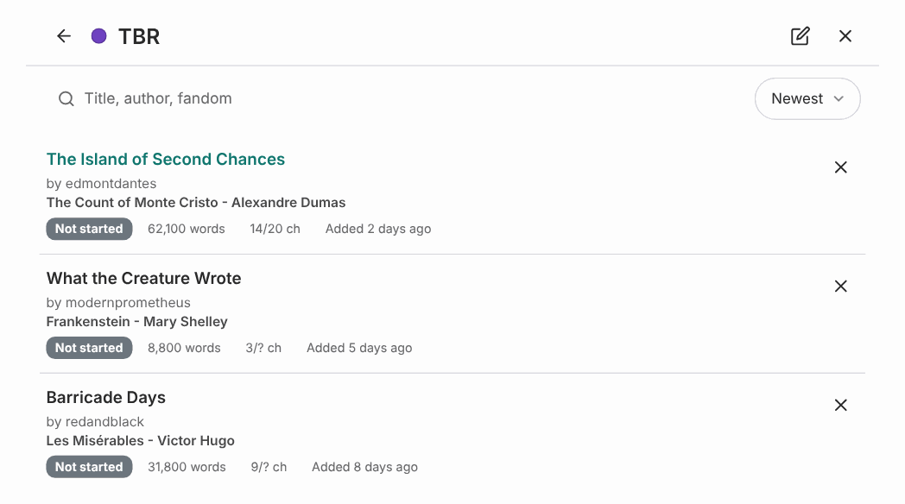
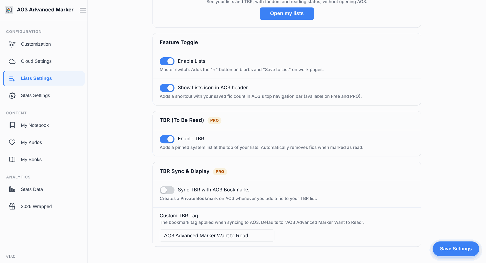

Lists work like playlists: you create them, give them any name and color, and save fics into them. A fic can be in as many lists as you like, whatever its reading status. Each list keeps the fic's title, author and fandom, so your lists still make sense if a fic leaves AO3.
Everyone can create one custom list. PRO unlocks unlimited lists and the TBR (To Be Read) list.
Want to Read is now called TBR. Your queue is all there, with the same rules and the same AO3 bookmark tag. The old Want to Read button became Save to List, explained below.
Turning Lists On
Lists are on by default. You'll find their settings in the extension's Options Page, under Lists Settings:
- Enable Lists — shows the list buttons on AO3.
- Show Lists icon in AO3 header — adds a Lists shortcut to AO3's top bar, with the number of fics you've saved.
- Open my lists — opens your lists right from the Options Page, even when AO3 is down.
Click Save Settings after changing a switch.

Saving a Fic to a List
There are two buttons for saving:
- In any list of fics on AO3, the + button at the top right of the fic, next to ✔ and X.
- On the fic's page, Save to List, next to AO3's own buttons. Once the fic is saved, it shows how many lists it's in, like "Saved · 2 lists".
Both open the Save to… box. Tick the lists you want and untick the ones you don't — each change is saved right away. To find a list, start typing its name; if there's no list with that name, the box offers to create it and save the fic there.

Once a fic is in a list, its + button and the Save to List button take the color of that list.

One-Click Saving with a Default List
If you save most fics to the same list, make it your default list (see Editing a list). Then the + button saves a fic to it in one click and shows a notice like "Saved to “Comfort fics”". Click CHANGE on the notice to pick other lists instead.
If the fic is already in a list, the + button opens the Save to… box, so you can manage it. Only one list can be the default; with PRO, it can also be your TBR.
Your Lists While You Browse
In search results, tag pages and bookmarks, fics you've saved show small colored dots — one per list, up to three, then +N. Hover over the dots (or tap them on your phone) to see the names of the lists.
Fics in your TBR that you haven't started also get a "To Be Read" badge under the title. A reading status (Read, Stopped at, Do Not Read) always comes first and takes the badge's place.

Seeing and Managing Your Lists
Open your lists in one of two ways:
- On AO3, click Lists in the top bar.
- In the Options Page, go to Lists Settings and click Open my lists. This works even when AO3 is down.

Your lists shows the TBR at the top (PRO) and your lists under My lists, each with its number of fics. Use the search to find a list, or New list to create one.

Inside a list
Click a list to see its fics. Each fic shows its fandom, its reading status (Read, Stopped at, Do Not Read or Not started), its words and chapters, and when you saved it. Click the title to open the fic on AO3.
- Search by title, author or fandom, and sort by Newest, Oldest or A–Z.
- To take a fic out of the list, click its ✕ and confirm.

Editing a list
Inside a list, click the pencil at the top to edit it:
- Name — up to 50 characters.
- Color — pick one of the colors, or click + to add a color of your own. To take a color out of the palette, click the ✕ on it and confirm.
- Default list — turn it on to save to this list in one click (see section 3).
- Delete list — deletes the list after you confirm. The fics stay in your other lists and in your reading history.
Click Save to keep your changes.

TBR: To Be Read PRO
The TBR is a special list for fics you haven't started yet. Turn it on in Lists Settings with Enable TBR; it then appears at the top of your lists and in the Save to… box.
- It cleans itself up: when you click Chapter Read or Mark as Read on a fic in your TBR, it leaves the TBR. If you undo the Mark as Read, it goes back. Your other lists keep the fic.
- Only fics you haven't started: for a fic you've already started or read, the TBR option in the Save to… box is grayed out.
- Marking a fic as Do Not Read doesn't take it out of the TBR; remove it yourself if you want.
- Color: open the TBR and click the pencil (Edit TBR). This is also where you make the TBR your default list.

TBR and your AO3 bookmarks
In Lists Settings, Sync TBR with AO3 Bookmarks creates a private bookmark on AO3 for every fic you add to your TBR, tagged "AO3 Advanced Marker Want to Read". You can change the tag in Custom TBR Tag. Remember to click Save Settings.

On your own bookmarks page, the Marker Tools bar gets a TBR button. With "TBR: OFF", fics in your TBR are hidden from the bookmarks list, so it shows what you've already started. Click it to switch to "TBR: ON" and see only your TBR.
Free Plan, PRO and Your Backup
On the Free plan you can have one custom list. If you had more lists while you were PRO, nothing is deleted: all your lists stay visible and you can still remove fics from them, but only one accepts new fics. Click Choose list on the notice in Your lists to pick which one.
Your lists and TBR are saved with the rest of your data in your Google Drive backup. They are not saved to JSONBin, so if you still use JSONBin, switch to Google Drive in Cloud Settings. See the Google Drive sync guide.